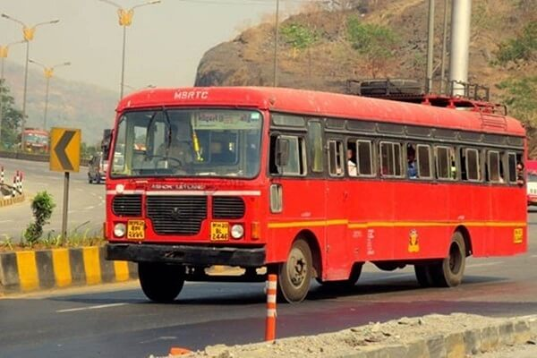

Bus-Stand..

Bodwad Bus Stand Contact Number, Enquiry No, Phone Number details have been provided who might be useful to all travellers. With Paytm, you get the convenience of booking online bus tickets from bodwad to pune at lowest fares. You also get the ease of selecting from various payment options like, Debit/Credit, Net Banking or Paytm Wallet.
When you book bus tickets from bodwad to pune you can also make use of Paytm Cash Wallet to ease out the payment process. Online ticket booking for bus from bodwad to pune is easily done with Paytm.com It is important to see the contact details of Bodwad Bus Stand Contact Number, Enquiry No, Phone Number.
Bodwad Bus Stand Contact Number, Enquiry No, Phone Number
Bodwad Bus Stand Address
Bus Stand Location: Bodwad, Jalgaon, SH-191, Bodwad Fatepur Kumbhari Wakod Road, Jalgaon, Jalgaon, Maharashtra 425310
Bodwad Bus Stand Contact Details
Bodwad Bus Stand Phone Number: 02582 275212
Enquiry Number: 02582 275212
Bodwad Bus Stand Complaint and Feedback: 02582 275212
ST Depot Manager Contact No.: 02582 275212